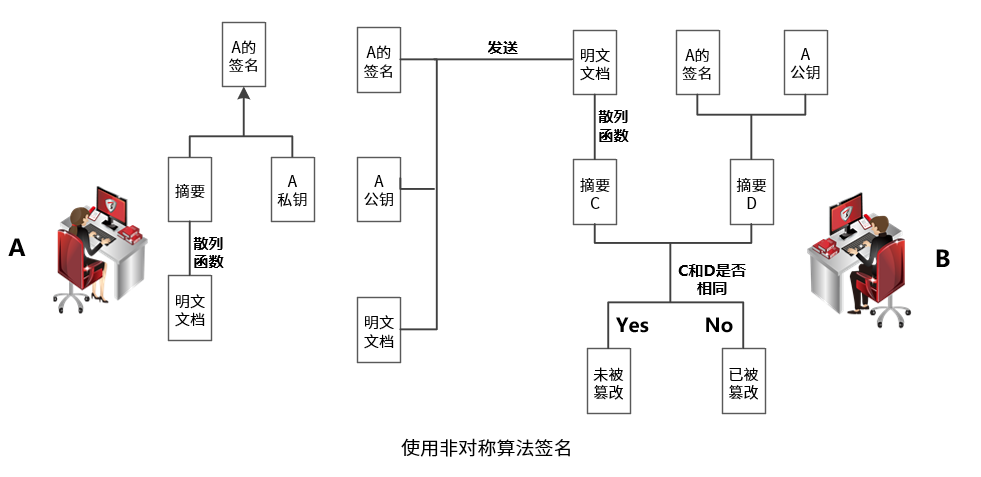
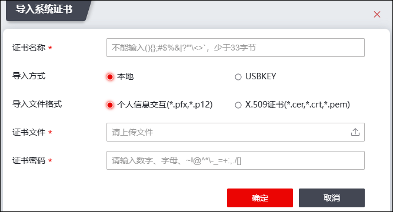

本机证书是本防火墙设备的证书，可用于其他设备与防火墙通信时，防火墙对数据通信进行加密（实现机制请参见 对端证书），其他设备对防火墙进行源认证和数据防篡改验证。其他设备与防火墙之间采用数字证书认证时，需根据防火墙的本机证书信息验证防火墙来源是否可靠，数据是否被篡改，其中，源认证和数据防篡改验证使用的技术为数字签名（发送方使用自身的私钥加密，接收方使用发送方的公钥解密）。使用数字签名方式实现源认证和数据防篡改验证的详细过程如下：

由于出厂配置中，NGFW没有本机证书，因此需由管理员手工导入。NGFW的本机证书可由TopPolicy或专门的CA中心下发，下发后的证书以文件形式存在磁盘或USBKey等存储载体中，管理员需要将它从存储载体中导入到防火墙中设备才可以使用。
配置本机证书的具体操作如下：
| 步骤1 | 选择 。 |
| 步骤2 | 导入系统证书 |
1）点击“导入”，弹出“导入系统证书”窗口，如下图所示。

在添加本机证书时，各项参数的具体说明如下表所示。
参数 |
说明 |
|---|---|
证书名称 |
输入合法的证书名称。 |
导入方式 |
选择导入方式，可选项为本地导入和USBKEY。 USBKEY导入证书，首先需要将龙脉USBKEY插入到PC端，被检测到后方可导入。 |
导入文件格式 |
系统证书导入方式选择“本地”时，可选择对应的证书导入格式。 可以导入的证书分为个人信息交互(*.pfx，*.p12)和x.509证书(*.cer,*.crt,*.pem)两种格式。 |
证书文件 |
必选项，点击“”按钮，选择要上传的证书文件。 |
私钥文件 |
文件格式选择“x.509证书”时，需单独上传私钥文件，点击“”按钮，选择要上传的私钥文件。 |
证书文件密码 |
文件格式选择“个人信息交互”时，如PKCS12文件有加密密码，需指定解密密码。 |
USBKEY类型列表 |
系统证书导入方式选择“USBKEY”时，选择型号列表。USBKEY型号支持K5、GM3000、GM3000PSCS、K7、TF五种款型。 |
USBKEY设备列表 |
选择USBKEY设备列表。 |
USBKEY容器列表 |
选择USBKEY容器列表。 |
证书用途 |
选择证书用途，可选择加密证书和签名证书。 |
2）点击【确定】按钮完成证书的导入。
| 步骤3 | 选中证书，点击“查看”按钮，可查看该证书的详细信息。 |